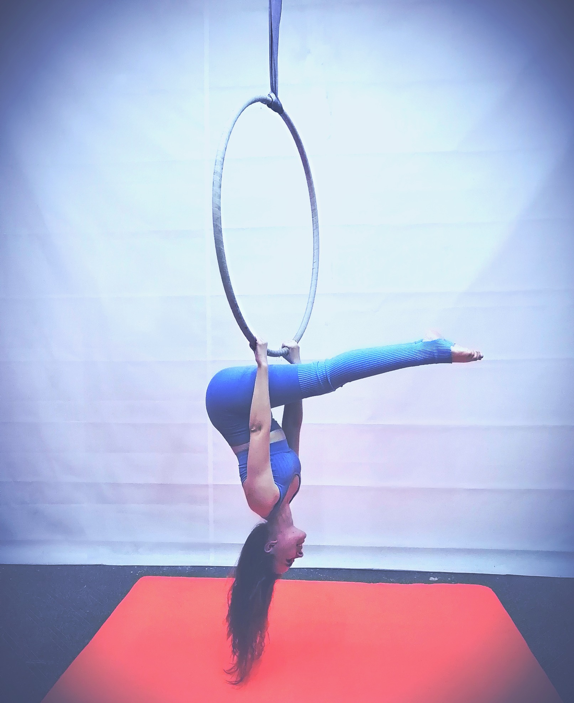
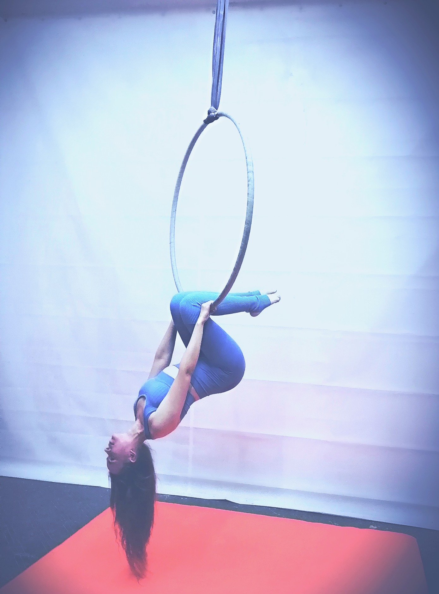
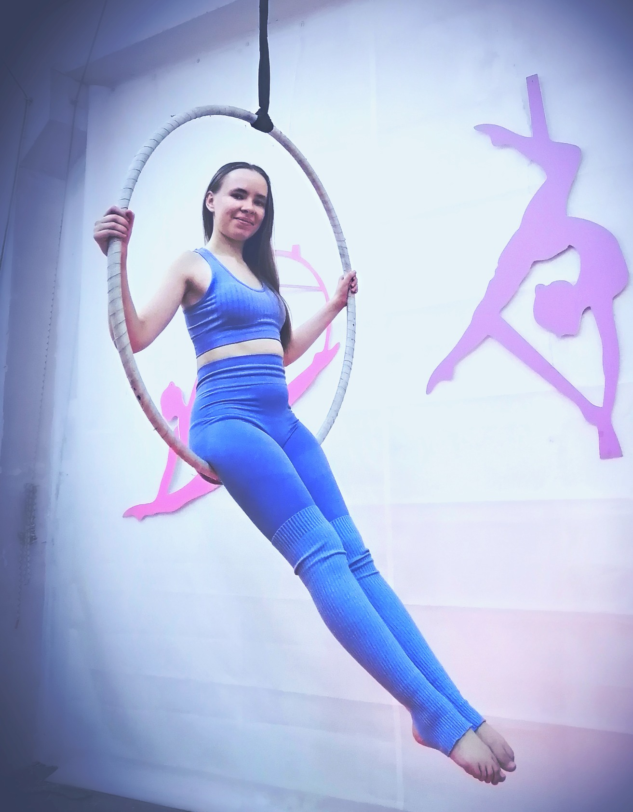

(Категория: подъемы)
Стоя на полу, лицом к кольцу.
Руки держат кольцо на ширине плеч за нижнюю дугу прямым хватом (ладонь сверху дуги). Оттолкнуться от пола ногами, пронести обе ноги (в группировке, носки натянуты) между рук и положить подколени на нижнюю дугу кольца. Затем перехватами рук поднять корпус, занять положение сед на нижней дуге кольца, прямые ноги вместе, носки натянуты. Руки держаться за дуги кольца. Спина ровная. Подбородок не касается груди. (Высота кольца не оценивается)
✔ Выполнен подъем
✔ Выполнен сед с удержанием 3 секунды
(Категория: висы)
Сед на кольце, руки держатся за боковые дуги кольца.
Переместить руки на верхнюю дугу кольца по обе стороны от стропы. Сделать подъем с согнутыми коленями (ноги пронести между рук) и зацепить их за верхнюю дугу по обе стороны от стропы (вис на руках вниз головой). Переместить руки так, чтобы они упирались в нижнюю дугу кольца, выпрямить руки за головой и сделать прогиб (на выдохе) в спине, голова тянется к стопам. Носки натянуты.
✔ Выполнен элемент "Колечко"
✔ Удержание в "колечке" 3 секунды
❊ Прогиб в спине не оценивается